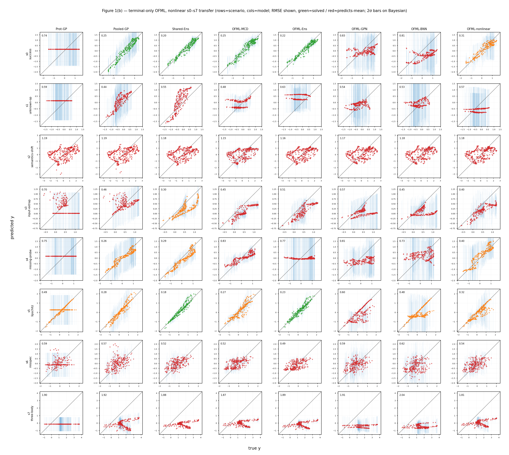

Claim 1 · Learning from terminal measurements only has an identifiability limit
The honest failure set for Claim 1. When composition is learned from terminal measurements only, without intermediate traces, we isolate the systematic conditions under which zero-shot forward transfer breaks. For each condition of the transfer diagnostics (Assumption 8: C1–C5), we construct synthetic scenarios s1–s7 that deliberately violate one condition at a time, and add C6 realizability to classify failures across six conditions. In each scenario we compare Shared-Ens (order-blind count descriptor), OFML-Ens (nonlinear composition), and OFML-linear (linear composition; the \(\Phi/\Psi\) audit target of Proposition 4). Composition aids transfer only to the extent that the identifiable conditions are met; once they break, no composed model can recover zero-shot under terminal-only — Table 1 quantifies this boundary.

s0 is identifiable and all composed models transfer, whereas s1 (unseen operation D) leaves every model short of the ground truth, and s2/s6 (semantic shift / misspecification) and s7 (three-body interaction) are only partially recovered by the composed models. A panel that presents honest failures without hiding them. Table 1 aggregates the same design in the linear family as NRMSE. Click to enlarge.We demonstrate Claim 1 — that "with terminal measurements only, not all operation semantics or higher-order interactions are zero-shot identifiable" — through controlled violations of each condition of the transfer diagnostics. As long as identifiability holds, composition (especially OFML-linear) aids transfer (Claim 1), but once any of vocabulary, semantics, coverage, identifiability, stability, or realizability breaks, terminal-only leaves a residual that cannot be erased zero-shot. In particular, we confirm three honest failures: (i) the unseen operation s1 yields failure for all models (vocabulary absent from the source cannot be recombined); (ii) the three-body interaction s7 produces \(r^{\mathrm{id}}>0\) from the kernel of the single- and two-color probes and remains only partially recovered; and (iii) the source-probe reduction s4 makes OFML-linear actually worse — a large condition number even when the residual is small.
In a synthetic benchmark factory, we construct deliberate violations that correspond one-to-one to transfer conditions C1–C6. The base s0 is an identifiable source/target pair (both order pairs excite all operation directions). From this we introduce: C1 vocabulary = an operation D absent from the source, introduced into the target (s1_unknown_op); C2 semantics = shifting the meaning of a same-named operation between source and target (s2_semantics); C3 coverage = extrapolating the target's hidden state beyond the source training domain (s3_input_extrap); C4 identifiability = reducing the source probes to drop rank (s4_missing_probe) and a target-only three-body interaction (s7_three_body); C5 stability = increasing the Lipschitz constant with high-gain composition (s5_lipschitz); C6 realizability = misspecifying the readout (s6_misspec). The main statistics of Table 1 are for the linear family (affine operation matrices + linear readout), aggregating NRMSE with 12 bench seeds as the unit of the main statistics. The full prediction grid over all s0–s7 × 8 models × 2 families (linear and nonlinear) is placed in Supplement S1 (fig1_linear.png / fig1_nonlinear.png, 3 seeds). Zero-shot (cost 0) evaluation only — correction via active observation is not performed here (that is the domain of Theorem 3).
Note: This page is devoted to the classification of failures and does not measure correction (active learning). The rank decomposition of identifiability itself is treated in the Φ/Ψ audit, and the full picture of adaptation that first splits the failure and then breaks the floor is treated in Figure 2 (cost-indexed). C6 (realizability) is a model-class misspecification lying outside C1–C5 of Assumption 8; it asks not about a diagnostic residual but about "whether the true function is realizable within the hypothesis class."
| Model | Structure | Main settings | How failure manifests |
|---|---|---|---|
Shared-Ens | 5-member MLP based on operation count descriptors (order-blind, nonlinear; predicts byte-identically for targets in different orders) | hidden=32, 300 epochs, y standardized, 5 members differing only by seed | Cannot in principle carry order or higher-order interactions, so it forms the lower-bound baseline for failure |
OFML-Ens | Composition net TerminalOnlyOFML (composes a latent module per operation type, nonlinear) | latent_dim=10, hidden=32, 400 epochs, 5 members | Recovers when identifiable. Excess capacity destabilizes identification under stress |
OFML-linear | Linear composition model (affine operation matrices + linear readout, 23-dimensional parameters; the Φ/Ψ audit target) | Analytic least squares, a deterministic kernel with no randomness | Near-exact when \(r^{\mathrm{id}}=0\); fails when \(r^{\mathrm{id}}>0\) and is amplified when \(K\) is large |
All metrics are macro NRMSE. Normalizing by each target's own scale \(s_\star^2=\operatorname{mean}_x(f-\bar f)^2\) (the variance of the ground truth), \[ \NRMSE_m(s)=\sqrt{\operatorname{mean}_x\,(\mu-f)^2\big/\,s_\star^2},\qquad \NRMSE\approx 1 \iff \text{mean prediction (trivial solution)}. \] \(\NRMSE>1\) means worse than the trivial mean prediction. On the identifiability side, the diagnostics of failure are given by the Φ/Ψ audit's goal-relevant residual \(r^{\mathrm{id}}=\norm{\Psi(I-P_{\operatorname{row}}(\Phi))}_F/\norm{\Psi}_F\) and condition number \(K=\sigma_{\max}(\Psi)/\sigma^{+}_{\min}(\Phi)\), with \(r^{\mathrm{id}}=0\iff\ker\Phi\subseteq\ker\Psi\iff\) the target is identifiable from the source (Proposition 4).
| Element | Value | Property |
|---|---|---|
| source training | 60 points/source | with noise \(\sigma=0.02\) |
| test | 256 points/target (Sobol scramble A) | noise-free (ground truth) |
| evaluation | cost 0 (zero-shot forward transfer only) | no active observation |
| family | linear (main statistics of Table 1) / nonlinear GP composition field (Figure 1, Supplement S1) | the same C1–C6 design |
| seed | Table 1: 12 bench seeds (linear) / Supplement S1: 3 seeds (both-family grid) | the family itself is re-drawn by bench_seed |
Hovering over an operation type highlights the same shared operation across all protocols (= weight sharing). One can visually confirm that operation D of s1 does not appear on the source side, and that the three-body order of s7 falls into the kernel of the two-color probes.
s1_unknown_op (operation D absent from all sources, \(\ker\Phi\setminus\ker\Psi\)), C2 semantics/s2_semantics (the action matrix of a same-named operation shifts from source→target), C3 coverage/s3_input_extrap (the target hidden state lies outside the convex hull of the source training domain), C4 identifiability/s4_missing_probe (reduce the source probes to single-color only, dropping rank(Φ)) and s7_three_body (the three-body interaction is not excited by single- and two-color probes), C5 stability/s5_lipschitz (raise the composition gain, increasing the Lipschitz constant), C6 realizability/s6_misspec (misspecify the readout outside the hypothesis class).best, "recovery" means being significantly below the trivial solution \(\NRMSE\approx1\). s1 has \(\NRMSE>1\) for all models (no recovery = an explicitly stated honest failure); s3/s5/s6 are recovered by OFML-linear when identifiable; and s4 makes OFML-linear worse due to a large condition number (1.805).Failures carry a distinct signature per condition. The order-blind Shared-Ens is worse than the trivial solution in almost all conditions (the terminal-only lower bound), and the composed models recover only in identifiable conditions. s1 (C1 vocabulary) yields failure for all models (NRMSE 1.39–1.51) — operation D not present in the source cannot be recombined, the typical residual that terminal-only cannot erase. s2 (semantics), s3 (coverage), s5 (stability), and s6 (realizability) are clearly recovered by OFML-linear (in particular s3 goes 3.726→0.213). s7 (three-body) is only partially recovered by the composed models (0.985) because the three-body direction falls into the kernel of the two-color probes, so \(r^{\mathrm{id}}>0\) remains. s4 (probe reduction) makes OFML-linear actually worse (1.805) — even with a small residual, \(K\) is large and excess capacity destabilizes identification, exactly the honest failure that Claim 1's intuition predicts.
Shared-Ens (orange) exceeds the dashed line in almost all conditions, forming the terminal-only lower bound. OFML-linear (indigo) is the minimum for s2/s3/s5/s6/s7, but for s1 all models exceed the dashed line (vocabulary missing = unrecoverable), and for s4 OFML-linear is made worse by a large condition number — both honest failures, not hidden.| Transfer condition (Assumption 8) | Scenario | Failure signature | Shared-Ens | OFML-Ens | OFML-linear |
|---|---|---|---|---|---|
| C1 vocabulary | s1_unknown_op | unseen operation D (absent from source) | 1.39 | 1.49 | 1.513 |
| C2 semantics | s2_semantics | operation-semantics shift between source/target | 1.748 | 0.697 | 0.693 |
| C3 coverage | s3_input_extrap | hidden-state extrapolation (outside input domain) | 3.726 | 1.976 | 0.213 |
| C4 identifiability | s4_missing_probe | source probe reduction (rank drop, large \(K\)) | 2.416 | 1.37 | 1.805 |
s7_three_body | target-only three-body interaction | 1.542 | 1.105 | 0.985 | |
| C5 stability | s5_lipschitz | high-gain composition (increased Lipschitz) | 0.667 | 0.787 | 0.474 |
| C6 realizability | s6_misspec | misspecified readout | 1.074 | 0.839 | 0.633 |
The three honest failures. s1 has all models worse than the trivial solution (even the best is 1.39) = vocabulary loss is in principle unrecoverable under terminal-only. s4 has OFML-linear (1.805) losing to OFML-Ens (1.37) = in the regime where exact identification is under stress, the condition number of the linear kernel amplifies the error. s7 is 0.985 even at best (the edge of the trivial solution) = the three-body direction falls into the kernel of the two-color probes and cannot be erased zero-shot under terminal-only. These are design limits showing that composition is not a panacea.
Table 1 delineates the scope of Claim 1 (the boundary between conditions where transfer succeeds and where it fails) condition by condition. In conditions where identifiability holds (C2/C3/C5/C6), composition clearly aids transfer (Claim 1), and in conditions where it breaks (C1/C4), the identifiability limit of terminal-only is exposed (Claim 1). In C1, s1 has operation D absent from all sources and falls into \(\ker\Phi\setminus\ker\Psi\), so no composition can invent the vocabulary. In C4, s7 has the three-body interaction fall into the kernel of the single- and two-color probes, producing \(r^{\mathrm{id}}>0\) (Proposition 4). In C4, s4 has a small residual but a large condition number, and the deterioration of OFML-linear (1.805) quantifies the intuition that excess capacity destabilizes operator identification when exact identification is under stress.
Whether these failures can be rescued by active observation is the next question: directly observing the target terminal restores terminal-response consistency (Theorem 3), and the way the cost-indexed curve breaks the floor can be seen in Figure 2. However, C1 (vocabulary loss) cannot be recovered even with active observation unless a probe for D is newly prepared on the target side, because the very vocabulary to be corrected does not exist — this is the hardest limit of terminal-only. For the rank decomposition of failure (\(r^{\mathrm{id}}\), \(K\), per-operation source rank), see the sister experiment Φ/Ψ audit.
Note: Limitations: Table 1 is zero-shot (cost 0) only and does not measure correction via active observation. NRMSE is evaluated over 256 test points, averaged over 12 seeds of the linear family (SE not shown). C6 (realizability) lies outside C1–C5 of Assumption 8 and is a different kind of failure that asks about model-class misspecification rather than a diagnostic residual. Figure 1 (nonlinear family) is for visual confirmation, and the aggregate statistics are based primarily on the linear family (Table 1).
Each row is a deliberate violation of one condition of the transfer diagnostics (Assumption 8: C1–C5): C1 vocabulary/s1, C2 semantics/s2, C3 coverage/s3, C4 identifiability/s4+s7, C5 stability/s5, and, outside Assumption 8, C6 realizability/s6. A break of identifiability can be measured rigorously by the rank condition of Proposition 4, and in particular the three-body interaction (s7) produces \(r^{\mathrm{id}}>0\) from the kernel of the single- and two-color probes. Broken identification cannot be erased by terminal-only zero-shot, but directly actively observing the target terminal restores terminal-response consistency (Theorem 3) — that correction requires active observation is the flip-side implication of this failure set.